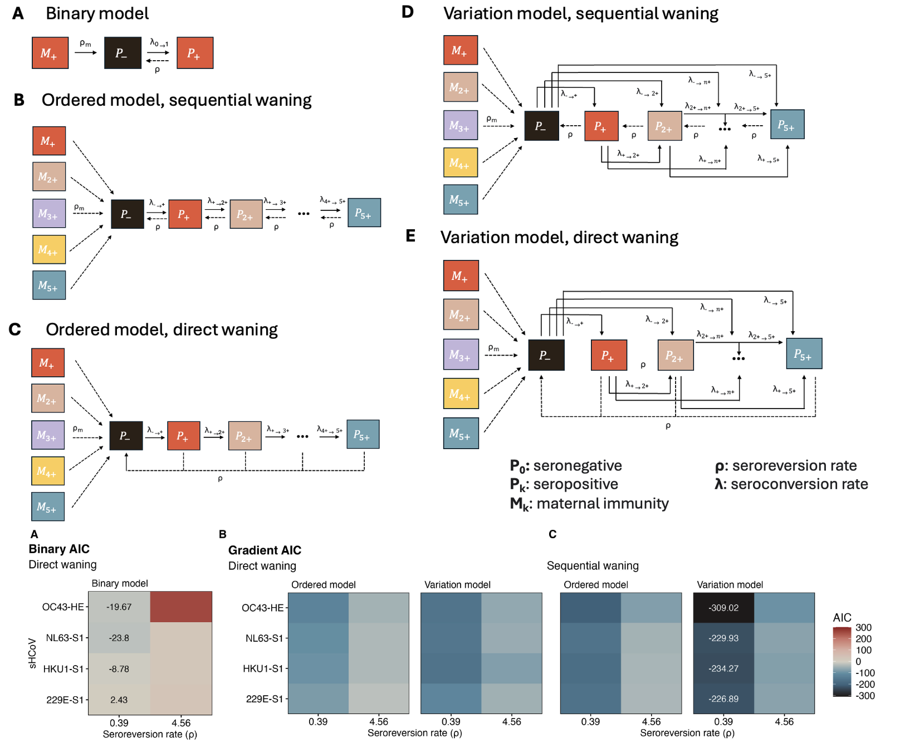
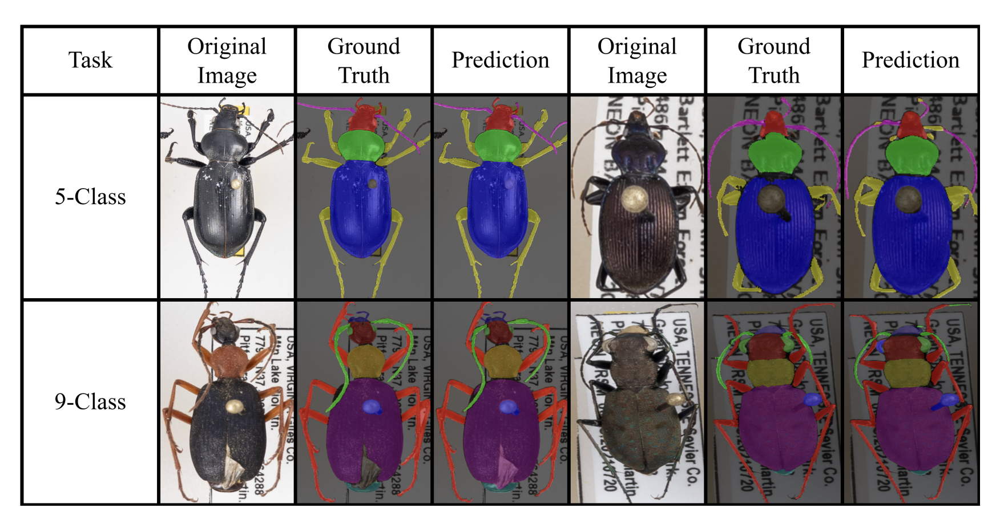
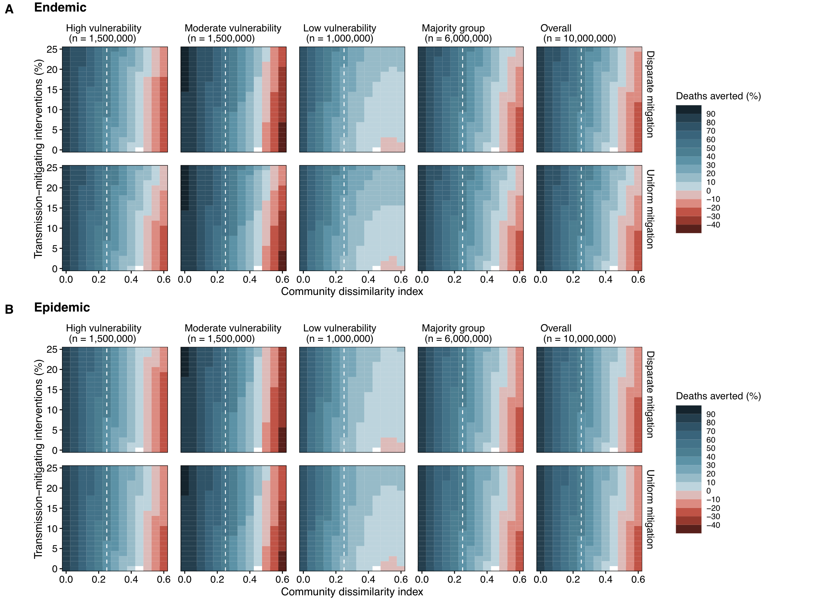

Research

Reimagining the serocatalytic model for infectious diseases: a case study of common coronaviruses
Sophie L. Larsen, Junke Yang*, Huibin Lv*, Yang Wei Huan, Qiwen Teo, Tossapol
Pholcharee, Ruipeng Lei, Akshita B Gopal, Evan K. Shao, Logan Talmage, Chris K. P.
Mok, Saki Takahashi, Alicia N. M. Kraay, Nicholas C. Wu, and Pamela P.
Martinez
Accepted to Epidemics (2025)
[DOI]
[medRxiv]
[Data & Code]

BeetleFlow: An Integrative Deep Learning Pipeline for Beetle Image Processing
Fangxun Liu, S M Rayeed, Samuel Stevens, Alyson East, Cheng Hsuan Chiang, Colin Lee, Daniel Yi, Junke Yang, Tejas Naik, Ziyi Wang, Connor Kilrain, Elijah H Buckwalter, Jiacheng Hou, Saul Ibaven Bueno, Shuheng Wang, Xinyue Ma, Yifan Liu, Zhiyuan Tao, Ziheng Zhang, Sydne Record, Charles V. Stewart, Wei-Lun Chao.
Accepted to NeurIPS 2025 Workshop Imageomics (2025)

Community connectivity and self-isolation as strategies to reduce
the burden of respiratory diseases
Soren L. Larsen, Erin Haslett, Annika Venegas, Lydia Schieleit, Junke Yang, Ayesha S.
Mahmud, and Pamela P. Martinez
Under Review (2025+)

Why Come to Class? Post-Pandemic Perspectives from Students in an Introductory Statistics Course
Kelly Findley, Mehmet Aktas, and Junke Yang.
Journal of Statistics and Data Science Education (2025)
[DOI]
|
|